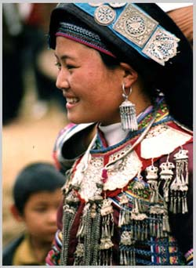
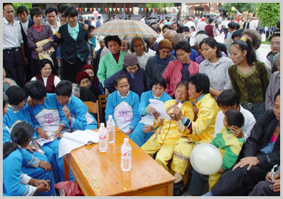
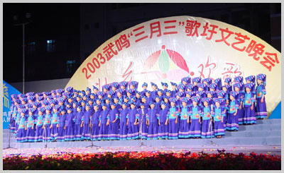
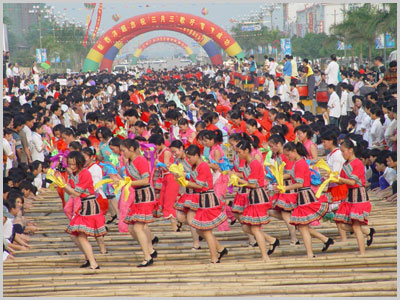

流传千古的武鸣山歌（歌圩），经过了改朝换代的洗礼，至今仍在65万人民的口头传唱，成为武鸣县民族文化百花园中一枝绚丽的山花。
武鸣县城乡居民，以壮族为主，多民族聚居。历年人口统计，壮族人口都占总人口的86%以上。人口众多的壮族，在漫长的历史岁月中，形成了富有本民族特色的文化。歌圩就是其中一种，尤以三月歌圩为最热闹。
武鸣壮族歌圩，起源于什么时候？至目前止，尚未发现有明确的历史料记载。据清朝中期陆祚蕃著的《粤西偶记》中所述，“壮族”族称至晚可追溯到元朝至正年间（公元1341-1398年），并记述了壮族“风俗最尚踏歌，浓妆绮服，越阡度陌，男女杂遝深林丛竹间，一唱百和，云为之不流，名曰：会阆 。自穑事毕至明春花朝皆会阆之期也”，并说“歌有韵……体绝句……歌意多双关”、“虽文人捉笔不能过也”。这就是生动真实地记录了壮族歌圩（“踏歌”）的场面。清朝末年，武缘县（今武鸣县）凤林（今罗波镇凤林村）人韦丰华，今广西壮族文学史学界称其为“清末壮族文学家、诗家”，他所作的《廖江竹枝词》，生动描绘了武鸣壮族三月歌圩的盛况：

胙颁真武喜分将，食罢精蒸糯饭香；
忽闻歌声风外起，家家儿女亮新妆。
柔夷斜眼竹篮携，簇立瓜分青草畦；
贯耳花歌行要答，莺喉试啭笑声低。
綦中分队路纵横，衬贴春光是冶容；
秾李天桃相倚处，有谁经过不停踪！
每因倾吐爱花情，抱颈连肩巧比声；
唱到风流欢喜曲，娇娃春思一齐生。
人逢故识注青眸，不觉留连古渡头；
绮语飞来心更醉，情通脉脉短长讴。
士也耽兮女也耽，行歌互答当心欢；
欢场易散愁同结，恼煞西山落山衔。
姐妹花开簇锦围，一年一度赏芳菲；
相须领队还教曲，累得娘行亦幕归。
白首农夫尽在田，轻眸也共羡花妍；
皤然人老春心在，故引儿童话少年。
传言娱戏兆年丰，台喜登春不约同；
行乐及时须尽兴，过兹十日又田功。
红粉平看一任人，江干分外有阳春；
兰卿太守曾多事，示禁花歌浪费神。
这首《廖江竹枝词》，把廖江（今马头镇小陆村的一条山溪流水）到渡头（今为县城渡头桥，古是乘船过河的渡口）的壮族歌圩的盛况描绘得淋漓尽致，不管是白首农夫，还是儿童少年，或者读书人（“士”）娇娃、姐妹以至老母亲，男女老少无不沉浸在歌圩的欢乐之中。据清朝乾隆六年（公元1741年）、道光二十四年（公元1844年）分别出版的两部《武缘县志》、同治十三年（公元1871年）的《武缘县图经》、1915年的《武鸣县志》等，都载有“踏歌之习，武缘每三月初一至初十，沿江上下数里之内，士、女如云”的内容，更说明武鸣壮族歌圩涉及面之广，过完歌圩就转入农业春耕大忙（过兹十日又田功）。清朝道光年间，思恩（今府城）知府李彦章（字兰卿）虽是比较开明的官员，但还是以踏歌“有伤风化”为由下令禁歌，但无法禁止，就是上述《竹枝词》中所嘲笑的“兰卿太守曾多事，示禁花歌浪费神”。20世纪20年代，县政府也出过告示禁歌，也只是一纸空文。解放以后，“四清”运动、“文化大革命”运动，以强大的政治压力禁歌，公开歌圩不见了，但田间劳动的壮族群众仍是山歌连绵不绝。粉碎“四人帮”后，尤其中共十一届三中全会以后，壮族山歌歌圩如潮涌、山洪奔泻，屡唱不绝。歌圩，可以说在壮族人民中长期存在，已经达到根深蒂固的程度。

武鸣“三月三”歌圩山歌大汇唱，一些歌迷三五成群自摆歌台。
武鸣县形成的壮族歌圩，实际上是延续到整个三月。三月初三形成歌圩，全县较为普遍，但一些地方也不尽相同。总之，各地按传统风俗过节，由于壮族居民十分好客，节日日期互相交错，便于亲戚朋友互相往来赶节，往往是节日当天，主人家接待亲戚、朋友和这些亲戚朋友一起来的若干个远亲、朋友，以客人越多越荣耀。旧时祭完真武神（现已多年不祭）后，用蒸好的五色糯米饭招待客人，下午以鸡、鸭肉和生鱼片等丰盛宴席共同畅饮。傍晚，各家主、客人则在村边开阔地或鱼塘边隔水对唱山歌，形成较集中的歌圩。年轻人则到较僻静的路边、山坡下，男女对唱山歌。有唱则有答，形成临时歌圩。如陆斡镇陆斡村本是三月初九过节，而初八晚就有山歌对唱直唱至初九黎明，几座圩亭到处唱山歌，听歌者云集，形成歌圩。节日的歌圩一般从节日傍晚至次日天亮，个别地方曾有对歌三天三夜才散场。
歌圩山歌对唱的内容丰富对彩，但因场地、规模不同而内容各不相同。人数众多的场面都是以天文地理、农耕活动和《梁山伯与祝英台》等民间传说故事为题材，互问互答。而散步在路边、山脚、野外的男女青年，则以互相赞颂、羡慕、谈情说爱为主要内容对唱。随着时间的推移和社会经济的发展，山歌对唱的内容也不断更新，增加了党的政策、人民生活的改善、计划生育、农业技术等新内容，成为一种群众乐于接受的宣传形式。

壮族少年蓝衣服饰山歌表演。身着传统蓝衣壮儿童服饰的百名蓝衣壮儿童山歌队，用壮语演唱武鸣县最具特色的山歌。
节日形成的歌圩以农历三月最为兴盛，规模最大。其次是农历九月，各地歌圩日期，就三月而言，“清明日”、“三月三”在九月则为初九，其余则与三月的日期相对应。此外，在不同的场合也形成小规模的歌圩，如20世纪50年代解放初期，陆斡镇龙口镇覃许屯有两位年轻的堂兄弟做榨花生油生意，某日各挑一担花生油一起赶往两江圩卖。两人翻过小明山，走至山脚，两江镇云川村板逼屯的女青年唱山歌提问，两人放下油担在路旁唱歌对答，往下一问一答，不发不可收拾，如此招来很多人观听。在听众中又分出若干个男女对手对唱，又形成了小规模的歌圩。堂兄弟俩唱至太阳西落，眼见赶到两江圩也天黑了，最后只好把油挑回家。两人虽已作古，佳话流传至今。可见，歌圩的盛行也不限于节日，而是随时随地都可以形成。只是此类歌圩不属于三月歌圩的范围。

千人竹杠阵表演。1000条6米长的竹杠，1000名演员敲击竹杠，1000名以上的群众参与。这就是在今年4月武鸣的“三月三”歌圩上出现的盛景。这个阵容，堪称是广西乃至全国的最大规模，具备了创造吉尼斯世界记录的资格。
为弘扬武鸣县壮族的优良文化传统，县人民政府根据全县壮族居民大多数在农历三月初三形成歌圩的风俗习惯，从1985年起，由文化部门主持，在县城举办“三月三”歌节，每年一届，至今已办了18届。每年农历三月初三歌节之日，灵水湖畔、武鸣河沿岸、明秀园、公路边、街道上，人山人海，壮乡县城“无处不飞歌”。18届歌节，已有日本、泰国、越南、俄罗斯、美国、英国、法国以及非洲的一些国家的学者、民间歌手来参加歌节活动。今年武鸣的《壮族“三月三歌节”》改用了《壮族“三月三”歌圩》名称，就是要还歌圩的本来面目，回归它的民间性，力求达到“土而精、俗而精”。
附：武鸣歌圩演唱种类
流传在武鸣各地的山歌演唱种类，据武鸣县马头镇歌师苏鼎崇老先生（1921--2003）的手抄本《山歌集》记载，共有十几种之多。
1、开头歌。在即将对歌之时，男方主动先起，以礼相待，请求应答，若女方满意，即笑而表示，待到男方唱了四至八句或十二句的落脚韵后即以应答。如果女方总是“金口难开”，听而不答，说明其中有原因，此时，男方总有自知之明，赶快走开另寻对象。
2、对歌。男女双方继“开头歌”之后，转入正式对歌。
3、求爱歌。男方追求女方，或女方恋上男方。
4、分别歌。
5、比歌。
6、故事歌，也称长歌。如唱壮族民间故事《金伦》、《银伦》等，唱汉族故事的《朱文瑞》、《梁祝》、《薛仁贵》、《乾隆下江南》、《二度梅》等。
7、“人之世界”歌。即歌唱盘古开天辟地的歌。
8、堪舆歌。
9、通信歌。（其中有男信、女信）
10、吊关歌。“吊关”指过去婚姻由父母包办，因而使妇女终身嫌弃自己丈夫或婚前连面子都未见过，但婚后生米成熟饭，无可奈何，又不能反抗，只好怨天怨地，独自唱自悲之歌，以抒其愤恨之情。
11、二句半山歌。即插进去或叫塞进三个字，如：第一句：今日到此地，（塞进三个字）“寻朋友”。第二句：想找黄金霞。第三句，不见其逛圩（街）（再塞三个字）“不见面”。接着唱第四句：定有事离家。
据说此类歌与今流传的山歌唱法有别，音调也有所异，至今无人会唱，可能失传。此外还有各地流传的迷歌、骂人歌、讽刺歌、“风流”歌。还有入宅、新婚喜、满月酒的颂扬之歌等。